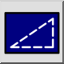

Екранні типи ліній
Панель інструментів / Піктограма:


Меню: Вид > Екранні типи ліній
Шорткод: N, L
Команди: screenlinetype | nl
Панель інструментів / Піктограма:


Перемикає екранний режим типів ліній поточного креслення. Якщо цей режим активовано, типи ліній оптимізовано для екрана комп'ютера. Усі лінії відображаються з екранною шириною лінії (лінії не стають ширшими при збільшенні), і всі шаблони показуються як фіксовані, піксельні шаблони на екрані (штрихи не стають довшими при збільшенні). Якщо цей режим вимкнено, ширини ліній і типи ліній показуються в одиницях креслення (за замовчуванням).